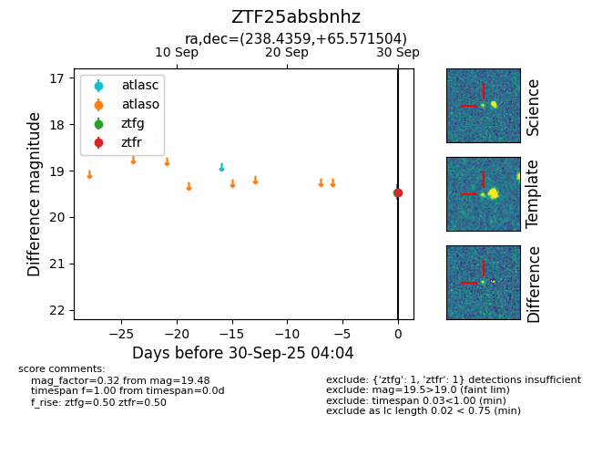

FINK: ZTF25absbnhz
Lasair: ZTF25absbnhz
ALeRCE: ZTF25absbnhz
ZTF25absbnhz (ztf,fink)
equatorial (ra, dec) = (238.4359,+65.57150)
galactic (l, b) = (99.4025,+42.28280)

last ztfg=19.46, ztfr=19.48
1 ztfg, 1 ztfr detections